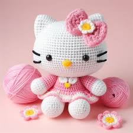
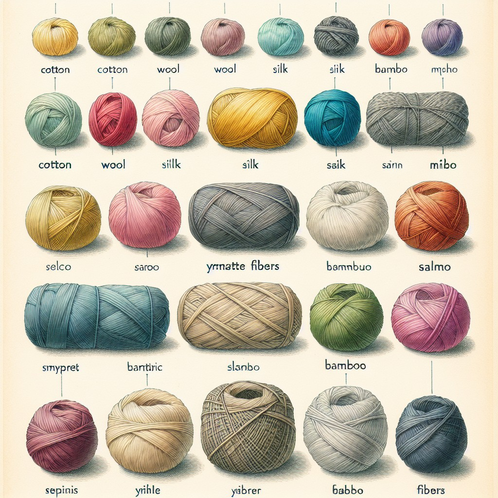

Crochet
Overview
Crochet is a process of creating textiles by using a crochet hook to interlock loops of yarn, thread, or strands of other materials. It's been around for centuries and has evolved from simple stitches to more complex patterns. The key difference between crochet and knitting is that each stitch in crochet is completed before the next one is begun, while knitting keeps many stitches open at a time. It can be used to create a variety of things, such as toys, blankets, and clothing.
Hooks
The name is derived from the French term croc, which means 'hook'.Hooks can be made from a variety of materials, such as metal, wood, bamboo, bone or even plastic. They also vary in sizes.

Yarn
The thickness or weight of the yarn is a significant factor in determining how many stitches and rows are required to cover a given area for a given stitch pattern. This is also termed the gauge. Thicker yarns generally require large-diameter crochet hooks, whereas thinner yarns may be crocheted with thick or thin hooks. That's why thicker yarns generally require fewer stitches and less time to work up a given project. Patterns are coarser with thicker yarns and produce bold visual effects, whereas thinner yarns are best for refined or delicate pattern-work. Yarns are grouped by thickness into six categories: superfine, fine, light, medium, bulky and superbulky. Thickness is measured by the number of wraps per inch (WPI).
Stitches
- Chain Stitch
- Slipknot
- Double Crochet
- Half Treble Crochet